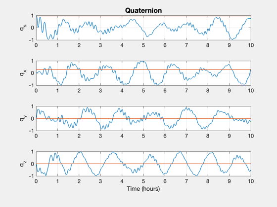
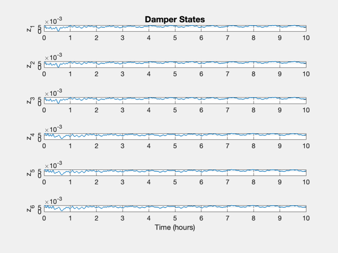
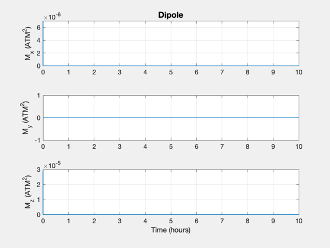
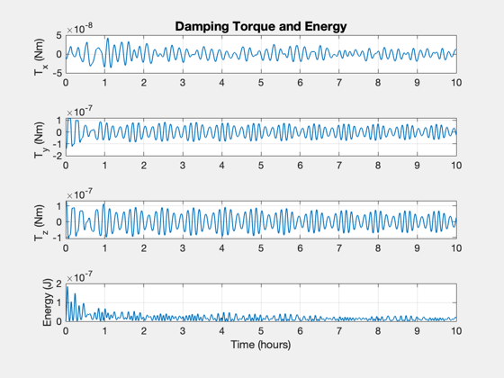
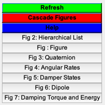
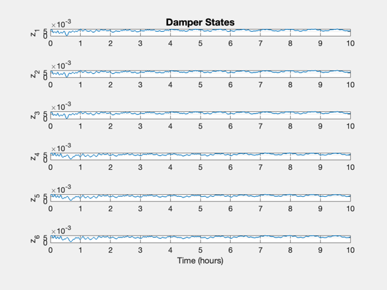
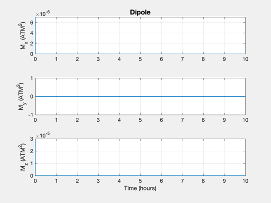
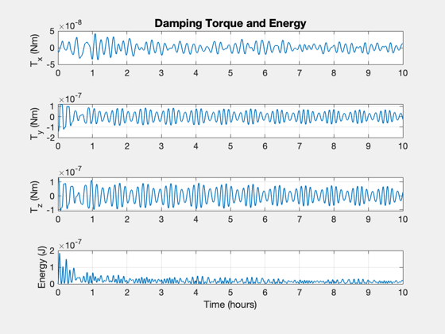
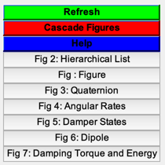

Simulate magnetic control
This uses 1 torquer for control. This demonstrates that magnetoresistive damping does not work unless a torquer is also used. Use the flags to turn the damping and control and off to see the effect! Use the dipole field to model a permanent magnet as an alternative to the torquer.
See also: RHSRigidBodyWithDamping, InertiaCubeSat, P3Axis, QUnit, Date2JD, ISSOrbit, El2RV, RHSHysteresisDamper, QTForm, BDipole, Dot, BFromHHysteresis, TimeDisplay, Skew, RK4, TimeLabl, Figui
Contents
%-------------------------------------------------------------------------- % Copyright (c) 2020 Princeton Satellite Systems, Inc. % All rights reserved. % Since 2021.1 %--------------------------------------------------------------------------
Constants
secInDay = 86400; mu0 = 4e-7*pi;
User inputs
dateStart = [2023 6 1 0 0 0]; tDuration = 10*3600; % duration (s) q0 = [1;0;0;0]; % initial attitude torqueD = [0;0;0]*1e-7; % a disturbance torque for testing tPulse = [1 2]*100000; % time window for the torque pulse dT = 2; % simulation timestep (s) dipole = [0;0;0]; % fixed dipole if control is not on, body frame omega0 = randn(3,1)*0.0001; % initial body rates (rad/s) % Control flags controlOn = false; % turn torquer control on or off with this flag mRDamping = true; % damping with RHSHysteresisDamper % Update the inertia here d = RHSRigidBodyWithDamping; [d.inertia, d.mass] = InertiaCubeSat('1U'); % Proportional controller dC = P3Axis; dC.inertia = d.inertia; cDamp = 0.0001; % optional constant damping % Target quaternion for the controller qT = QUnit([1;0.3;0;0]);
Set up the simulation
% Start date jDStart = Date2JD(dateStart); % Orbit [el,jD0] = ISSOrbit; % latest elements el(6) = el(6) + (jDStart-jD0)*secInDay*2*pi/Period(el(1)); [r,v] = El2RV(el); % Get the starting position and velocity vectors % Time vector n = ceil(tDuration/dT); t = linspace(0,tDuration,n); jD = jDStart + t/secInDay; if( mRDamping ) % implement a set of damping rods d.dampingType = 0; d.dampingData.Br = 0.004; % Remanence (T) d.dampingData.Bs = 0.025; % Saturation flux density (T) d.dampingData.Hc = 12; % Coercive force (A/m) % Damper rod unit vectors d.dampingData.u = [0 0 0 0 0 0;1 1 1 0 0 0;0 0 0 1 1 1]; % Dimensions are radius 1 mm by 95 mm d.dampingData.v = pi*0.001^2*0.095*ones(1,size(d.dampingData.u,2)); d.dampingFun = @RHSHysteresisDamper; % Damper function uECI = QTForm(q0,d.dampingData.u); [bI,bIDot] = BDipole(r,jDStart,v); hMag = Dot(uECI,bI )/mu0; hMagDot = Dot(uECI,bIDot)/mu0; z = BFromHHysteresis( hMag, hMagDot, d.dampingData )'; else % constant damping d.dampingType = 1; z = zeros(6,1); d.dampingData = cDamp; end x = [r;v;q0;omega0;z]; xP = zeros(20,n); TimeDisplay('initialize','Hysteresis Damping',n);
Simulation loop
for k = 1:n TimeDisplay('update',k); % Get the damping torque for plotting [~,p] = RHSRigidBodyWithDamping( x, t(k), d ); % Plotting omega = x(11:13); energy = 0.5*omega'*d.inertia*omega; xP(:,k) = [x(7:end);p.torqueDipole;p.torqueDamper;energy]; % Disturbance pulse for testing if( t(k) > tPulse(1) && t(k) < tPulse(2)) d.torque = torqueD; else d.torque = [0;0;0]; end % Add the magnetic control torque if( controlOn ) q = x(7:10); bECI = BDipole(x(1:3),jD(k)); % Earth's magnetic field b = QForm(q,bECI); dC.q_desired_state = qT; [tC,dC] = P3Axis(q,dC); sB = Skew(b); m = sB*tC/Mag(b)^2; d.dipole = m; % ATM^2 else d.dipole = dipole; % fixed dipole (permanent magnet) end % Integrate x = RK4(@RHSRigidBodyWithDamping,x,dT,t(k),d); end TimeDisplay('close')
Plotting
[t,tL] = TimeLabl(t);
yL = [d.states(:)' {'M_x (ATM^2)'} {'M_y (ATM^2)'} {'M_z (ATM^2)'} ...
{'T_x (Nm)'} {'T_y (Nm)'} {'T_z (Nm)'} {'Energy (J)'}];
Plot2D(t,[xP(1: 4,:);repmat(qT,1,n)],tL,yL(7:10),'Quaternion','lin',{'[1 5]' '[2 6]' '[3 7]' '[4 8]'})
Plot2D(t,xP( 5: 7,:),tL,yL(11:13),'Angular Rates')
Plot2D(t,xP( 8:13,:),tL,yL(14:19),'Damper States')
Plot2D(t,xP(14:16,:),tL,yL(20:22),'Dipole')
Plot2D(t,xP(17:20,:),tL,yL(23:26),'Damping Torque and Energy')
Figui
%--------------------------------------
% $Id: f61be4f79f2cb00eaa9ee21ad1873cd883e9239d $
     
   